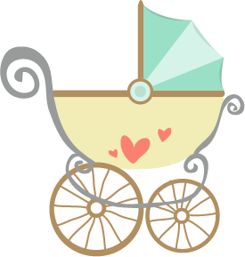

About half of women in the United States report at least one food craving during pregnancy, says Judith Brown, author of What to Eat Before, During, and After Pregnancy. And those cravings aren't all for pickles and ice cream. In fact, they run the gamut. BabyCenter moms confessed to wanting pickles wrapped in cheese, salsa spooned straight out of the jar, and yes, even steak fat. And where in the spectrum of sweet, salty, spicy, and sour does one woman's passion for black olives on Sara Lee cheesecake lie? Another mom told us she ate a steady DIET of Cheese Whiz sandwiches, which she now (after having her baby) can't stand the sight of. Eggplant, particularly on pizza, was another expectant mother's obsession.
The Lamaze technique, often referred to simply as Lamaze, is a prepared childbirth technique developed in the 1940s by French obstetrician Dr. Fernand Lamaze as an alternative to the use of medical intervention during childbirth. The goal of Lamaze is to increase a mother's confidence in her ability to give birth; classes help pregnant women understand how to cope with pain in ways that both facilitate labor and promote comfort, including focused breathing, movement and massage
"The best job I've ever had, being a Mom!"